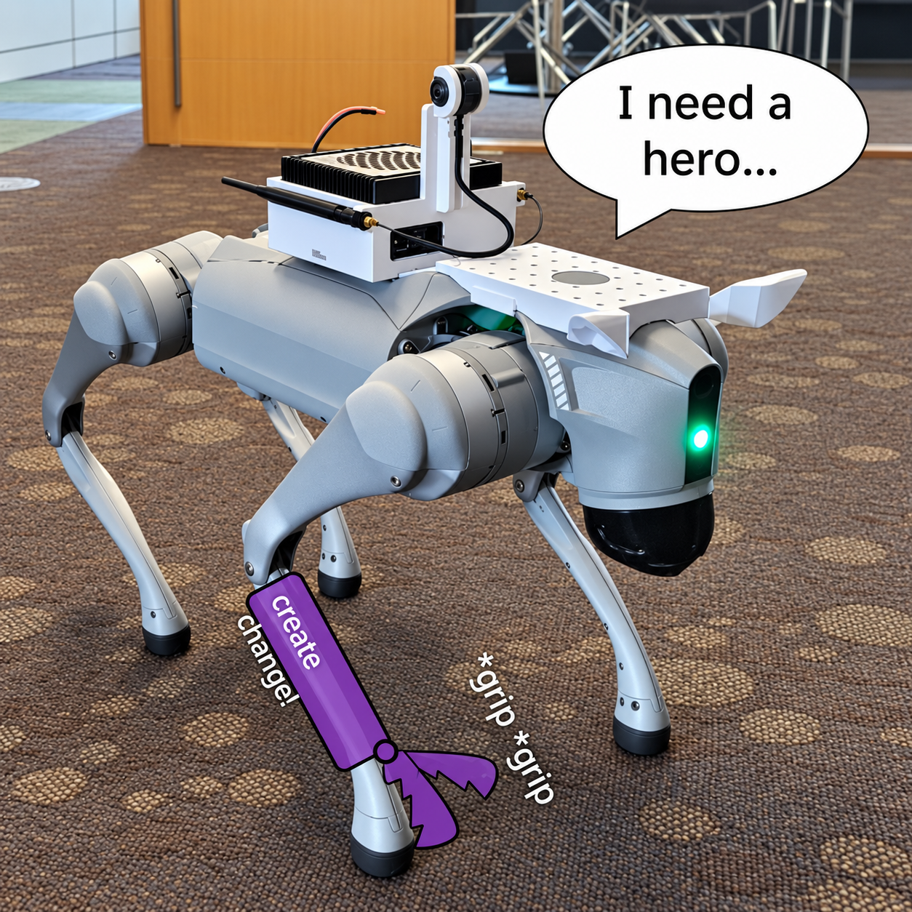
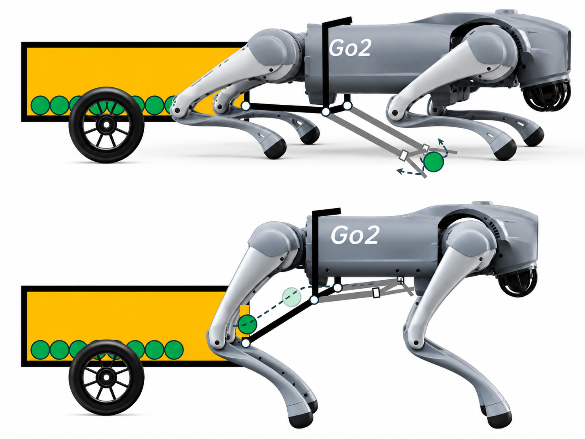
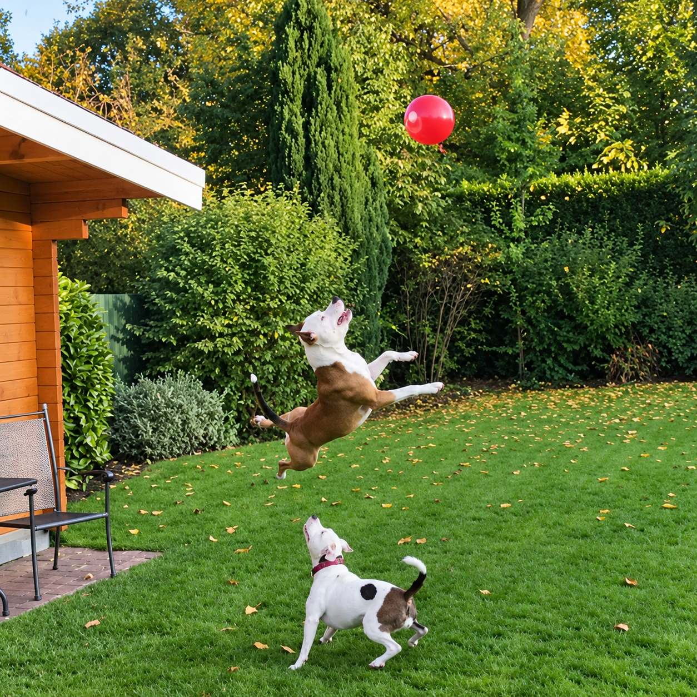
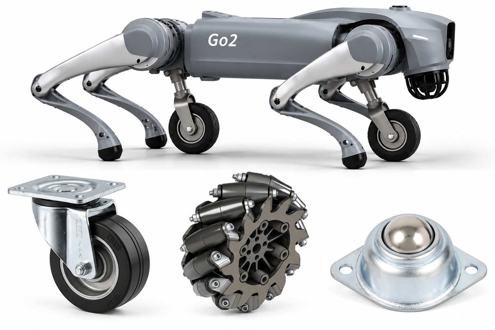

Meet Qiuqiu, our legged robot. She is part of AIS Group, helping us explore
how robots learn to move and interact with the world around them.
Our work with her brings together robot learning, locomotion and perception,
connecting policies learned in simulation with experiments on a real robot.
Legged locomotion and interactive object tracking research at AIS Group.
Projects with Qiuqiu
She can walk and detect objects. Now she needs a hero to help her try something new.
These project opportunities explore new mechanisms and learned behaviours for her.
Mechanical design · Electronics
Give Qiuqiu a (Robotic) Finger

Help her grip objects by designing a lightweight appendage attached to her leg.
The aim is a self-contained, battery-powered gripper with wireless control that stays
within her field of view and does not interfere with normal locomotion.
The work: Design and prototype the mechanism, integrate a microcontroller
and servo system, and control it alongside her joints through the robot API and ROS.
Useful skills: Mechanical engineering, CAD/CAM, electronics, power supplies,
microcontrollers, servo motors, and basic Python on Linux.
Scope: Three-legged walking, navigation to objects and autonomous gripping
with visual feedback are possible extensions to discuss with the supervisor.
Mechanical design · Compliant mechanisms
Project Big Hugger

Help her collect balls on a golf or tennis court with a passive mechanical system.
The collector should use potential energy and compliant mechanics, without powered actuators.
The work: Design a mechanism that uses her body movements to gather balls.
One concept lowers a scoop as she crouches and lifts it as she stands, allowing the ball
to roll into a collection wagon. Alternative mechanisms are welcome.
Useful skills: Mechanical engineering and CAD/CAM, plus basic Python
for joint control through the robot API and ROS.
Scope: Computer vision and control using visual feedback are optional
extensions to discuss with the supervisor.
Reinforcement learning · Sim-to-real
Project Bouncer

Teach her to reach a balloon and jump at the right moment to keep it in the air.
The physical experiment uses a balloon rather than a football.
The work: Build a reinforcement learning framework in Isaac Sim / Isaac Lab,
develop reward functions and a training curriculum, and explore balloon detection with
a 360-degree camera. High-fidelity simulation is a key milestone, with transfer to the
real robot as an ambitious next step.
Useful skills: Python, reinforcement learning, PyTorch, Linux and ROS.
Research direction: Agile locomotion, perception integration and sim-to-real
deployment. This project is recommended for students considering higher degree research.
Wheeled-legged robotics · Reinforcement learning
Project Strong Wheeling

Give her the best of legs and wheels: teach her to skate on passive wheels attached
underneath her body, using her legs to propel herself.
The work: Investigate the wheel type and number of wheels, model the
wheeled-legged robot in Isaac Sim / Isaac Lab, and develop a reinforcement learning
framework for skating. The design could potentially use just one wheel.
Useful skills: Python programming and reinforcement learning theory.
Research direction: Simulation and learned control for wheeled-legged
locomotion. This project is recommended for students considering higher degree research.
Be her next hero
Interested in working with Qiuqiu? Contact Dr Thien-Minh Nguyen to discuss a project,
its scope and possible research extensions.